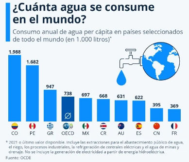

El agua es un recurso esencial para la vida. Cuidarla y conservarla es vital para garantizar la salud de los ecosistemas y el bienestar de las personas. Sin un acceso adecuado al agua, las comunidades enfrentan serios riesgos para su salud y desarrollo.
La escasez de agua provoca graves problemas como la falta de acceso a agua potable, sequías, reducción en la producción agrícola y conflictos por recursos. La falta de agua limpia también contribuye a la propagación de enfermedades y dificulta la higiene básica.
El mal uso del agua incluye el desperdicio en el hogar, el riego excesivo, la contaminación de fuentes naturales y la falta de tecnologías sostenibles en industrias.
Es fundamental que implementemos hábitos y prácticas de conservación de agua para asegurar que las futuras generaciones tengan acceso a este recurso. Enseñar a los niños y jóvenes la importancia del ahorro de agua y la protección de los cuerpos hídricos es clave para un futuro sostenible.